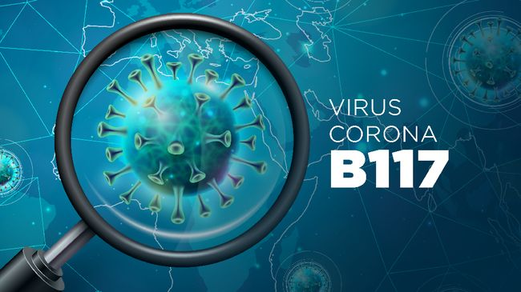
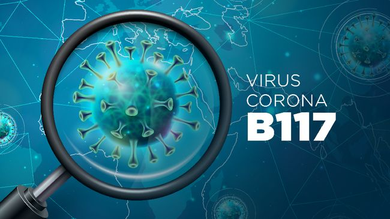

Corona BARU B117 lebih berbahaya?
Penulis: Marcella

Hey guys, gimana kabar kalian? Aku harap kalian sehat-sehat ya. Tapi kalian udah tau belum sih sama varian baru dari Covid? Yup, B117 adalah varian baru yang sudah masuk di Indonesia. Menurut WHO, setidaknya sudah ada sekitar 60 negara yang terinfeksi varian ini. Peneliti pun mengatakan bahwa varian B117 memiliki tingkat reproduksi 1,35 kali lebih tinggi daripada varian virus corona normal. Apa sih perbedaan gejala dengan corona sebelumnya?

1. Kelelahan dan lesu
Kondisi kelelahan dapat dirasakan sebagai dampak dari zat sitokin, yaitu zat yang dihasilkan oleh sistem kekebalan tubuh sebagai bentuk reaksi melawan virus.
2. Nyeri otot
Nyeri otot yang tidak biasa diduga dapat terjadi karena virus menyerang serat otot dan lapisan jaringan tubuh.
3. Sakit Kepala
Dalam beberapa kasus, virus corona dapat menyebabkan seseorang mengalami sakit kepala. Namun, peneliti pun masih mencari tahu lebih lanjut apakah sakit kepala adalah penyebab dari B117 atau faktor lainnya.
4. Gejala lainnya
Belakangan ini, beberapa peneliti menemukan gejala baru seperti diare, ruam kulit, kehilangan nafsu makan, dan kebingungan.
Kendati begitu, peneliti masih memerlukan penelitian lebih lanjut soal gejala baru yang timbul akibat varian virus corona B117.
Nah itu dia beberapa gejala dari mutasi B117. Peneliti masih terus melakukan penelitian. Walaupun virus ini ditemukan 50-70% lebih menular dari strain awal, efektivitas vaksin dan risiko komplikasi tetap sama. Semoga informasi ini bermanfaat yaa. Jangan lupa untuk selalu mematuhi protokol, stay safe guys!
